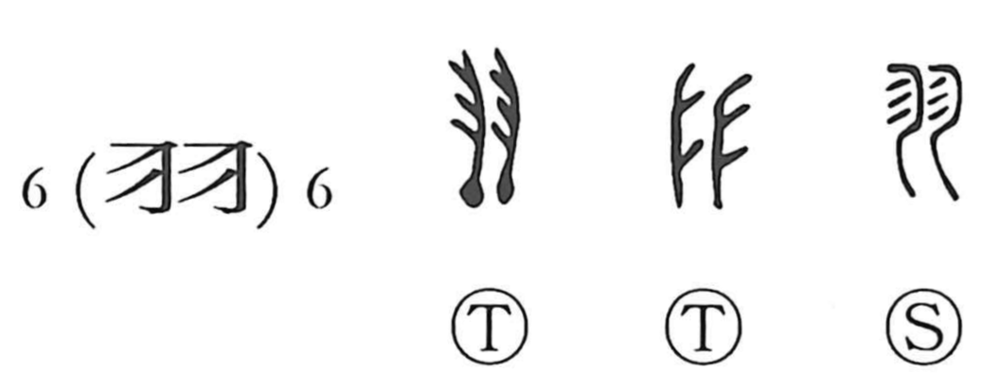

羽

Kun: hane, ha | On: u
feather ・ wing
Explanation
A pictograph of two bird feathers set side by side, this character originally depicts the light, paired plumes themselves and thus came to mean “feather” and, by extension, “wing.” In early belief, birds were seen as embodiments of divine spirits, so feathers were treated as sacred and used to adorn flags, weapons, and other implements. In usage, 羽 points to the smaller individual feathers, while the related character 翼 (yoku) names the large flight feathers that form the wing.